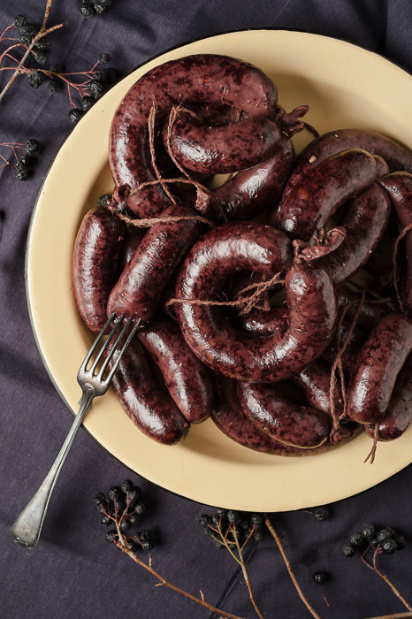

Blood Sausage

Description
Everything you need to make delicious blood sausages at home!
Ingredients
- 2.5 dl of barley groats
- 200-300g of pork
- 50g smoked bacon
- 1 onion
- 50g butter
- salt and black pepper
- 250-300g of blood
- lamb or pig intestents
Steps
- Wash the barley groats. Cut the pork and onion into small cubes and fry slightly on a pan
- Put washed groats into boiling water and add to that the onion and pork. Let it boil on slow heat until the groats turn soft. Add some salt and pepper for flavour. Cool down the porridge and mix in the blood
- Fill the intestents with the mixture and form into sausages. Boil the sausages on low heat for 15-20 minutes
- Before serving cook the sausages in an oven until they turn crisp